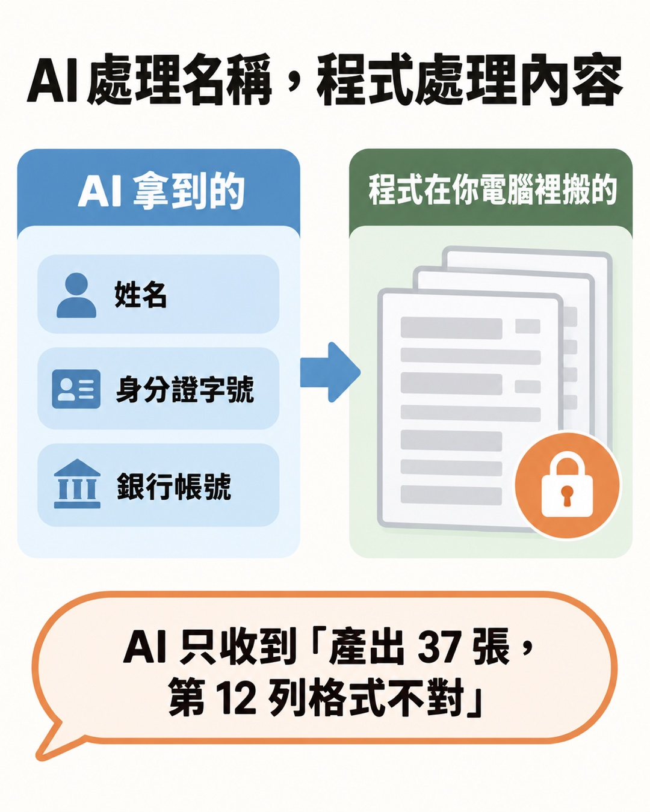

這篇在講什麼
辦活動要付講師費、勞務費，每個人都要簽領據，領據上有身分證字號、地址、銀行帳號。想讓 AI 一次處理整份名單，又不想讓 AI 讀到任何一個人的個資。這篇整理我跟 AI 來回討論出來的做法：讓 AI 寫一支在自己電腦上跑的小程式，AI 只拿到欄位名稱，真正的資料由程式搬。
- 辦活動、上課、發講師費或勞務費，每次都要一張張打領據的人
- 手上有一份名單 Excel，想讓 AI 幫忙，又擔心把身分證字號交給 AI 的人
- 替客戶或單位處理行政流程，要對別人的個資負責的人
- 一個判斷原則：AI 處理「名稱」，程式處理「內容」
- 三種做法的比較，以及各自的防護靠什麼：Word 合併列印、自己執行的小工具、讓 AI 幫忙下指令的命令列工具
- 一段可以直接貼給 AI 的提示詞，和一張不懂程式也能照著勾的驗收清單
陪跑企業的行政助理要批次做領據，每張都要填身分證字號
我陪跑的一家企業，有位行政助理負責活動的講師費和勞務費。每個人都要簽一張領據，領據上要填身分證字號、地址、帳號這些資料，一張一張打很花時間，也很容易打錯。
這位助理想用 AI 加快速度。好在這件事是在陪跑時提出來的，我們才有機會在動手之前先抓到隱憂：名單一交給 AI，這些個資就離開了公司的電腦。
所以我把問題換個方式拿去問 AI：有沒有可能讓 AI 大量處理這件事，但是又不要讓 AI 讀到這些資料？它只負責搬運，不負責讀。
問的當下，我腦中想到的是 API key，也就是串接 AI 服務用的那串密碼。它的保管方式後面會講，先講為什麼名單不能直接丟給 AI。
把名單交給 AI，名單就離開了你的電腦
我們平常用的 ChatGPT、Claude 這類 AI，都在 AI 公司的伺服器上運算。AI 讀到的每一個字都會送到那邊處理，包括你貼上的內容、它打開的檔案。有些 AI 工具（例如 Claude Code、Codex）還能直接在你電腦上執行指令，它看到的執行結果也一樣會送過去。
會不會被拿去訓練、保存多久，要看你用的方案和隱私設定；名單已經離開你的電腦，這件事不會因為設定而改變。
蒐集這些資料的是企業，出事時要負責的是企業和經手的人。所以這題的目標很明確：AI 可以幫忙，但名單內容盡量一個字都不要經過 AI。
- 公司資料可以貼給 AI 嗎？｜先搞清楚這兩條紅線 這一段只講名單交給 AI 會發生什麼事，那篇把五種常見檔案排開，逐一判斷哪些能離開你的電腦
API key 的保管方式，可以直接套用在名單上
我自己管 API key 的規矩是：key 不貼進對話、不寫進筆記，存在電腦的鑰匙圈（macOS 的 Keychain）裡。AI 寫程式時只寫「這裡要用某一把鑰匙」，程式執行時自己去鑰匙圈拿，而且設計上不把那串密碼印出來。AI 知道那把鑰匙叫什麼名字，設計上看不到那串密碼本身；鑰匙圈那邊也要設定好哪些程式可以取用。
名單可以照同一個方式處理。AI 需要知道的是：B 欄叫「身分證字號」，要填到領據的哪一格。B 欄裡寫的是誰的號碼，它用不到。

讓 AI 寫一支搬資料的小程式，設計成只給它欄位名稱
具體的分工是這樣：
| 步驟 | 誰做 | 設計上 AI 看得到什麼 |
|---|---|---|
| 1. 告訴 AI 表格有哪些欄位，給它一張空白領據樣板 | 你 | 欄位名稱、空白樣板 |
| 2. AI 寫程式：哪一欄填到領據的哪一格 | AI | 對應規則 |
| 3. AI 自己編一份明顯是假的測試資料，測試排版 | AI | 測試資料，看了也沒關係 |
| 4. 程式讀你真正的名單，一人產出一張領據 | 程式 | 看不到 |
| 5. 程式回報「產出 37 張，第 12 列身分證格式不對」 | 程式 | 筆數和列號，沒有內容 |
有三個地方是這套能成立的關鍵：
- 開發只用測試資料。AI 在寫程式、測試排版的整個過程，碰到的都是它自己編的、一看就知道是假的資料。
- 程式的所有輸出都不含內容。畫面上的訊息、錯誤訊息、紀錄檔都只准有數量和列號；產出的 PDF 檔名用流水號，不用人名。不然 AI 只要看一眼資料夾，就等於看到整份名單。
- 檢查不需要看內容。台灣身分證字號第十碼是檢查碼，有公開的驗算方法；Email 可以做基本的格式檢查；帳號欄至少可以檢查是不是空的、有沒有奇怪的字元。程式只告訴你「第幾列有問題」，你再自己打開 Excel 去改。
這些檢查只能抓到明顯的打錯。身分證字號通過驗算，只表示結構與檢查碼吻合，號碼是不是本人的、有沒有冒用，還是要靠人。銀行帳號的長度各家銀行不同，沒辦法用單一位數驗證。
- 讓 AI 只做需要判斷的事，其他交給程式｜四情境分工法，從完全沒套路到完全不變 這一段只講個資這個情境，那篇從「每次都要重新判斷」到「完全不變」分成四層，說明哪一段該交給 AI、哪一段該寫成程式
做領據的三種做法，從完全不用 AI 到用講的就能跑
跟 AI 來回討論的過程中，做法一路在變。
一開始想的是讓 AI 寫程式，每次處理名單都由 AI 去執行。後來我想到更單純的方式：做成一個工具，把 Excel 放進去，領據就跑出來。跑的時候完全沒有 AI，也不用花 AI 的額度。
再往下想，工具可以做成命令列工具（CLI，打一行字就能執行的小程式），平常讓 AI 幫忙下那行指令。這樣不用另外做一個有按鈕的軟體，結果在螢幕上看得到，還能順便用軟體把領據寄出去。
討論的時候 AI 也提醒我一件事：Word 本來就有「合併列印」，可以拿 Excel 當資料來源，依每一筆資料印出一張領據。這已經是一個現成的工具。它的限制是合併完通常是一整份文件，官方說明裡也沒有「一人存成一個 PDF」的標準做法，要一人一檔寄出去就得另外處理。
| Word 合併列印 | 自己執行的小工具 | 讓 AI 下指令的命令列工具 | |
|---|---|---|---|
| 要準備什麼 | Word 和 Excel | 請 AI 做一次工具 | 請 AI 做一次工具，電腦裝好 Claude Code 或 Codex |
| 平常怎麼用 | 自己在 Word 裡操作 | 關掉 AI，自己執行工具 | 跟 AI 說「幫我產這批領據」 |
| AI 額度 | 不用 | 不用 | 每次會用到一些 |
| 自動抓格式錯誤 | 沒有 | 可以設計進去 | 可以設計進去 |
| 一人一個 PDF、寄送 | 要另外處理 | 可以設計進去 | 可以設計進去，用講的 |
| 名單的防護靠什麼 | 過程沒有 AI 參與 | 執行時 AI 不在場，另外要確認程式本身不會連網 | 工具的輸出設計加上 AI 工具的設定，只能降低風險 |
我的判斷：
- 只要印出來給大家簽，用 Word 合併列印就好，不用做任何工具。
- 要一人一個 PDF、要寄出去、常有人填錯，才值得做工具。最穩的用法是真的名單由你自己執行。
- 讓 AI 下指令最省事，代價是防護從「AI 不在場」降成「靠設計和設定擋」。
後兩種是同一支工具，做好之後兩種用法都能用。
讓 AI 下指令時，完整內容只打開給人看
讓 AI 幫忙下指令的版本，工具預計分成四個指令：
| 指令 | 做什麼 | 設計上 AI 看到什麼 |
|---|---|---|
| 檢查 | 驗算身分證檢查碼、檢查 Email 與帳號欄 | 筆數、出錯的列號 |
| 產出 | 一人一張 PDF 領據，檔名用流水號 | 產出幾張 |
| 預覽 | 在螢幕上打開一份清單：誰、寄到哪、附哪張領據 | 只知道「已打開預覽」 |
| 寄送 | 真的寄出 | 成功幾封、失敗幾封 |
關鍵在「預覽」這一步。完整內容做成一份放在電腦裡的檔案，由工具直接在螢幕上打開給本人看；AI 那邊只收到一句「已打開」。人要核對的東西都在螢幕上，AI 要知道的只有做到哪一步。
每一層防護各靠什麼，沒有一層萬無一失
同一套做法，防護強度差很多，要分清楚：
| 防線 | 做法 | 靠什麼 |
|---|---|---|
| 提示詞 | 叫 AI 不要讀名單 | 靠 AI 照做，最弱 |
| 名單放哪裡 | 名單、產出的 PDF、預覽檔都放在同一個不會同步的資料夾 | 要先確認那個資料夾不在 iCloud、OneDrive、Google 雲端硬碟的同步範圍 |
| 工具的輸出 | 畫面、錯誤訊息、紀錄檔、檔名都不含內容 | 靠程式寫對，要實際測過 |
| AI 工具的設定 | 禁止讀取名單資料夾、自動攔截碰到那個資料夾的指令 | 擋得住不小心，擋不住換一種寫法 |
| 作業系統沙盒 | 讓電腦本身拒絕 AI 執行的指令去讀那個資料夾 | 比設定硬，但工具要讀名單就得開例外 |
| 寄送前確認 | 本人看過預覽、親口說「寄」 | 靠人 |
有兩件事要特別講清楚。
AI 工具的設定，擋不住換一種寫法。例如禁止讀取的規則，能擋住它認得出來的讀檔指令；AI 如果被擋下來，可能自己改用另一種寫法重試，那一種規則就不一定認得，結果一樣是讀到了。
讓 AI 啟動工具，工具本身就是那個缺口。沙盒可以讓 AI 執行的其他指令都讀不到名單，但工具要讀名單，就得替它開例外。開了例外之後，工具印出什麼，AI 就看到什麼。所以這個版本真正的防線是工具的輸出設計，沙盒和設定只能降低風險。
就算這樣，程式本身也是 AI 寫的，可能有你看不出來的連網動作。兩個不用懂程式的做法：第一次跑真名單時先把 Wi-Fi 關掉（有插網路線也拔掉），工具照樣能跑完，代表這一次執行不需要網路；程式碼裡通常沒有名單內容，確認裡面沒有寫死的帳號或密碼之後，交給另一個 AI 檢查有沒有連網功能、有沒有把內容寫進紀錄檔。
還有一個 AI 看不到真資料帶來的限制：萬一對應規則寫錯，例如把地址填進帳號那一格，AI 自己發現不了。所以測試資料要故意做得刁鑽：每一欄放一眼就認得出來的代號、很長的地址、空白欄、開頭是 0 的帳號、最後一筆，印出來一格一格對過，真的跑完之後再親手抽查幾張。
今天就能開始：只要列印用 Word，要寄送才做工具
只要印出來簽：用 Word 合併列印
- 用 Word 做一張領據樣板，要填資料的地方先空著。
- 在 Word 的「郵件」功能裡選「合併列印」，資料來源選你的名單 Excel。
- 把「姓名」「身分證字號」這些欄位，一個一個插進樣板對應的位置。
- 預覽幾筆確認沒錯位，再合併、列印。
整個過程在你自己的電腦上完成，不用 AI。網路上搜尋「Word 合併列印 Excel」就有很多圖文教學。
要一人一檔、要寄送：先用測試資料讓 AI 做出第一版
- 準備一張空白的領據樣板，最好是 Word 檔（PDF 樣板比較難填，要另外處理），不要有任何人的資料。
- 把 Excel 的標題列抄下來，只要欄位名稱，不要內容。
- 找一個能在你電腦上建立檔案的 AI 工具，例如 Claude Code 或 Codex。網頁版 ChatGPT 只會給你一段程式碼，你還得自己想辦法執行。
- 把下面這段提示詞貼給它，附上樣板和欄位名稱。
- 做好之後照下面的驗收清單走一遍，再用真名單跑。
下面這段可以整段複製貼給你的 AI：
欄位名稱和電腦系統改成你自己的就好。要寄送的話，再加一段：
用真名單之前的驗收清單
- 名單資料夾不在 iCloud、OneDrive、Google 雲端硬碟的同步範圍裡（Mac 的「文件」「桌面」如果開了 iCloud 同步，放進去的東西都會上雲端）
- 用測試資料跑一次，畫面上只看到數字和列號
- 產出的 PDF 檔名都是流水號
- 刁鑽測試資料印出來，每一格都在對的位置
- 把 Wi-Fi 關掉、網路線拔掉再跑一次，工具照樣能跑完
- 確認程式碼裡沒有寫死的帳號密碼後，交給另一個 AI，問它「這支程式有沒有連網功能、有沒有把內容寫進紀錄或印出來」
- 要寄送的話，測試模式跑過一次，信都寄到自己信箱，附件對得上人
有一項沒過，就先停下來，把那一項丟回給 AI 修。
法規面，請找承辦人確認
蒐集身分證字號時要告知對方哪些事、名單和領據要保存多久、什麼時候刪，還有扣繳憑單的所得人資料怎麼填（外籍人士用的識別資料也不一樣），請單位的個資、法務或會計承辦人確認。這一段我沒辦法替你判斷。
給你的 AI 讀的技術備忘（人可以跳過）
這一段給 AI 看，以 Claude Code 為例。設定項目名稱依 2026 年 9 月的官方文件，版本更新可能改名，請你的 AI 套用前先對照官方文件。以下都只能降低風險，最穩的仍是真名單由人在 AI 工作階段之外執行。
權限規則。在 settings.json 的 permissions.deny 加上名單資料夾，例如 Read(~/活動名單/**)。官方文件說明這條規則會套用到內建的 Read、Grep、Glob，以及它認得出來的 Bash 讀檔指令（cat、head、tail、sed、tee）。屬於盡力辨識，用 Python 或 Node 寫一段程式去讀就可能繞過，主要功能是防誤觸，不能單獨當安全邊界。
PreToolUse hook。在工具執行前檢查指令內容，碰到名單資料夾就用 exit code 2 或回傳 permissionDecision: "deny" 擋下（exit code 1 不會擋）。只比對指令文字會漏掉相對路徑、變數、切換工作目錄、子程序；hook 本身逾時或出錯時會放行，屬於 fail-open。
沙盒。macOS 版用系統內建的 Seatbelt，可以用 sandbox.filesystem.denyRead 禁止沙盒內的指令與子程序讀取名單資料夾，並把 allowUnsandboxedCommands 設成 false，避免被擋時改在沙盒外重跑。沙盒不管內建讀檔工具，那一層仍靠權限規則。工具若要由 AI 啟動，就得用 excludedCommands 讓它在沙盒外執行，這時工具的一切輸出都會回到 AI，工具就是資料跨出沙盒的通道。
工具的輸出規格。stdout、stderr、例外訊息、紀錄檔都去識別，只含筆數、列號、錯誤類型；輸出檔名用流水號；預覽檔、暫存檔、產出檔都放在名單資料夾內，完成後依使用者設定清除；要測試中途出錯、中途中斷時會輸出什麼。鎖定套件版本，不引入用途不明的套件。
格式檢查。台灣身分證字號第十碼是檢查碼，驗算方法公開（字母轉數字、乘權重、加總為 10 的倍數），通過只表示通過邏輯檢查。銀行帳號長度依銀行與帳戶類型而異，只做非空、字元與合理長度檢查，欄位一律以文字讀取保留前導零。Email 只做基本語法檢查。
寄送。測試模式由程式在底層強制覆寫所有收件人；正式寄送前產生收件人與附件一對一的摘要供人確認；記錄批次編號防止重複寄送；部分失敗時只重寄失敗的那幾封。寄信帳號密碼放 Keychain，程式取用時不輸出。對方同意的話，可考慮附件加密或改用下載連結。
官方文件：Permissions、Sandboxing、Hooks。
這篇提到過的
- 公司資料可以貼給 AI 嗎？｜先搞清楚這兩條紅線：這篇處理的是「非交給 AI 不可時怎麼讓它碰不到」，那篇是更前面一步，先判斷哪些資料根本不該離開你的電腦。
- 讓 AI 只做需要判斷的事，其他交給程式｜四情境分工法，從完全沒套路到完全不變：做領據屬於「完全不變」那一層，那篇講其他三層的工作怎麼分。
再往前後延伸
- 所謂的 AI 自動化，到底是 AI 在跑還是程式在跑？｜我用 Agent 設一套程式自動化工作流：往前一步，這篇的「AI 寫程式、程式去跑」就是那篇講的分法，那篇有完整的例子。
- OpenRouter 用 DeepSeek，資料就不會經過中國嗎？教你自己查實際路由供應商：往後一步，真的要把資料交給 AI 服務時，怎麼自己查它實際送去哪裡。
想把自己的行政流程交給 AI，又擔心個資
我每個月開兩場免費線上講座，講的就是怎麼把重複的工作整理成 AI 接得住、又守得住界線的流程。有想問的流程可以直接帶來問。
每個月兩場，線上進行。